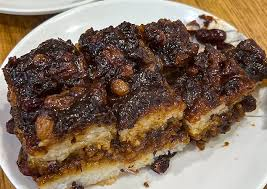

Signature Dishes
Roujiamo — often called the Chinese hamburger. Tender braised meat tucked inside crisp, warm bread. A Xi'an street classic.
Wide, springy, and translucent, providing a refreshing chewiness against a bold, tangy, and intensely spicy sauce.
Crumbled flatbread soaked in rich mutton soup — hearty and deeply savory. Often eaten with pickled garlic and herbs.
Long, hand-pulled wide noodles tossed with chili oil, garlic, and vinegar. The name "biang" is famous for its complex character.
Kaorou skewers feature chunky pieces of lamb or beef, grilled to be smoky and tender, and heavily coated in a fragrant, bold seasoning dominated by cumin and chili.
Food Pics
